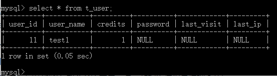
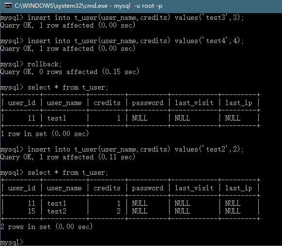

最近看数据库事务的时候遇到了一些疑问，特此将自己的疑问和猜想总结下来，留给日后研究。
对于日志回滚的猜想
问题的萌发
我们先验证一些基本操作。
- 对test表插入数据，我们开两个命令窗口，插入测试数据，发现都没有问题。
 - 这时候我们用窗口1开启一个事务，插入三条数据，但没有提交，这时候窗口2进行查询是查询不到的。
- 这时候我们窗口1进行rollback,窗口2再进行查询，还是查询不到，符合预期。
- 问题来了，这时候我们查询的时候，数据库是没有改变的，再插入一条数据，会发现自增长字段改变了。
猜想（已证实），虽然回滚了，但是自增长字段还是增加了，可能是事务在写的时候确实是写入了，但是回滚是通过回滚日志回滚的，自增长字段还是回保留。
进一步猜想
- 通过上一步，我们发现一个问题，在窗口1的事务未回滚前，窗口2却查不到，窗口1却能查到更改。
猜想（存疑），在窗口1开启事务时，会将表从磁盘复制到内存一份，对这份内存进行修改，最后再复制到磁盘中。
Questions
- rollback是通过回滚日志回滚的，为什么回滚时不将内存中的数据拷贝到磁盘中，出现了自增长字段莫名增加等情况（等情况为猜测），是有什么别的想法嘛？
- 目前自己的想法是，rollback保留回滚可能是为设计考虑，可能是其他情况兼容，而造成自增长字段莫名增长也是可以忽略的。
- 通过查阅相关资料，回滚日志除了能够在发生错误或者用户执行 ROLLBACK 时提供回滚相关的信息，它还能够在整个系统发生崩溃、数据库进程直接被杀死后，当用户再次启动数据库进程时，还能够立刻通过查询回滚日志将之前未完成的事务进行回滚，这也就需要回滚日志必须先于数据持久化到磁盘上，是我们需要先写日志后写数据库的主要原因。参考自 Jekyll 的博客
- 猜想，如果每开启一个事务都要复制一个表的话，那岂不是对内存要求很高，如果是表很大，又或者是分布式数据库又是怎么处理的？在这里提出疑问，留给日后自己再研究解决。